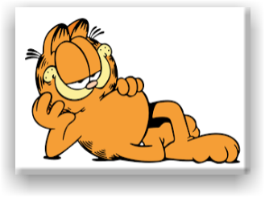

Famous Cartoon Cats

Garfield is the cat with an attitude. He doesn't really care for anything except for naps, food, lasagna, teasing the dog, and did I mention more lasagna?
Hello Kitty is the most popular character for Saniro. She doesn't say much, but she appears almost everywhere.
Cat in The Hat is most likely the most charismatic character from Dr. Seuss. This cat teaches many lessons we have to learn in life.
Tom is the cat that is determined to catch Jerry, that tricky mouse! Most cartoons of these characters feature the "chase" between Tom and Jerry. I think Tom is pretty crazy.